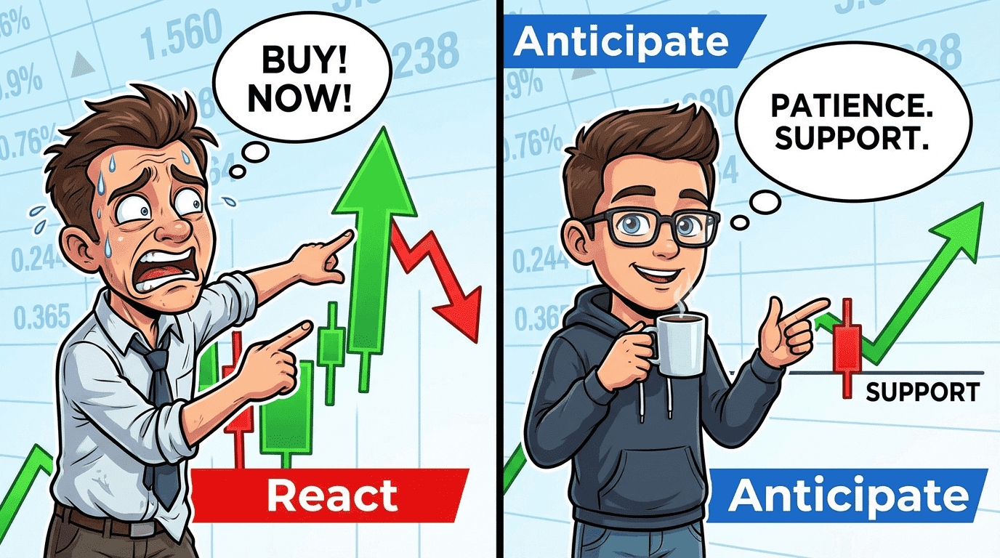
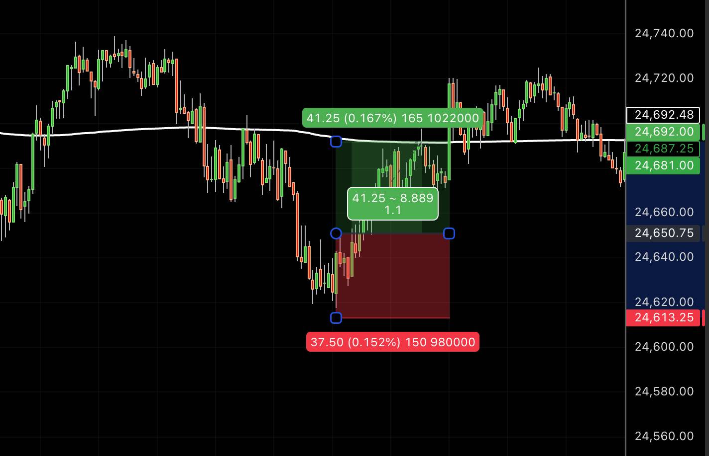
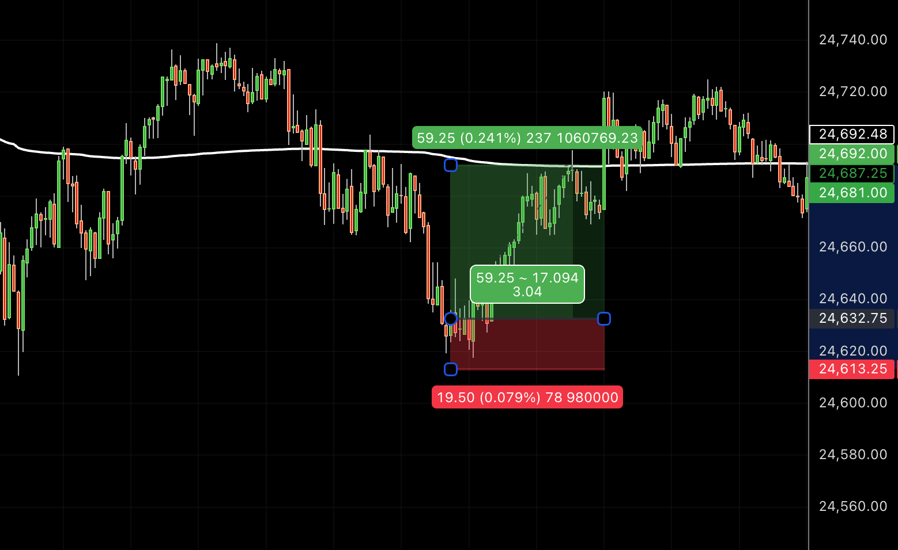

Ever had this?
Right idea.
Right direction.
…and still not getting paid.
Because the RvR just kills the damn trade…
ENTRY MISTAKES

It's frustrating…
You're right… but the trade doesn't pay.
And most of the time, it comes down to one thing:
Your entry.
You can totally flip your trade expectancy by just improving the entry slightly.
Doesn't need to be much, and on the lower time frames, that can be 1 minute's worth of price action.
Same trade thesis, same direction, just a better entry.
I call the concept “Buy on Red, Sell on Green”
Let's say you're trading NASDAQ…
Mean reversion back to VWAP.
- Stop below the low
- Target = VWAP
Now look at this:
Exhibit one:
Buy on a break of that short-term resistance
RvR = 1:1.1

Exhibit two:
Buy on the 50% retrace of the ignition bar.
RvR = 1:3

Same trade, same stop, same target, different entry, massive shift in RvR…
And yeah, easier said than done, but it's so worth working on.
You don't even have to change much else, but work on better entries and the whole maths of your playbook changes.
Anyway, I go deeper in my latest podcast episode.